a. Cơ cấu định vị
Trong hộp số, cơ cấu định vị được dùng để xác định những vị trí của các bánh răng gài số, khớp gài hoặc bộ đồng tốc, đảm bảo các bánh răng gài số ăn khớp hết chiều dài răng và tránh hiện tượng tự ra, vào số ngẫu hiên (hiện tượng nhảy số).
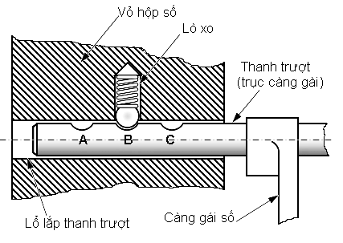
Hình 3.42. Trục trượt với các rãnh của cơ cấu định vị
Cơ cấu định vị thường đươc bố trí trên nắp hộp số tương ứng với các trục trượt trong hộp số (Hình 3.43), bao gồm: trên trục trượt có các rãnh lõm tương ứng với vị trí của bánh răng gài số, khớp gài hoặc bộ đồng tốc mà nó điều khiển. Trên nắp hộp số được khoan các lỗ, trong đó có lắp viên bi và lò xo. Khi trục trượt ở vị trí xác định, viên bi được lò xo đẩy tỳ vào rãnh lõm. Để cho trục trượt dịch chuyển, người lái phải tác dụng lực thắng được sức căng của lò xo trong cơ cấu định vị.
b. Cơ cấu khóa hãm (Chống gài 2 số cùng lúc).
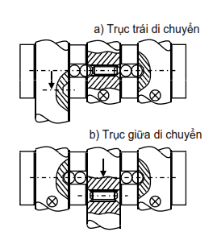
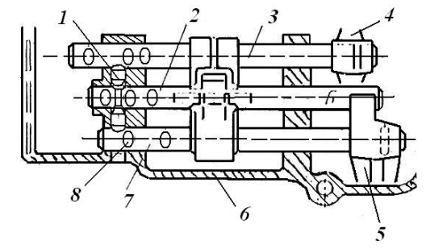
Hình 3.43. Cơ cấu khóa hãm trên các loại hộp số 3 trục
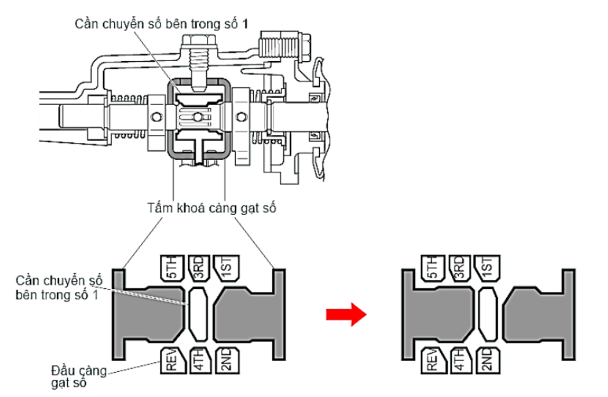
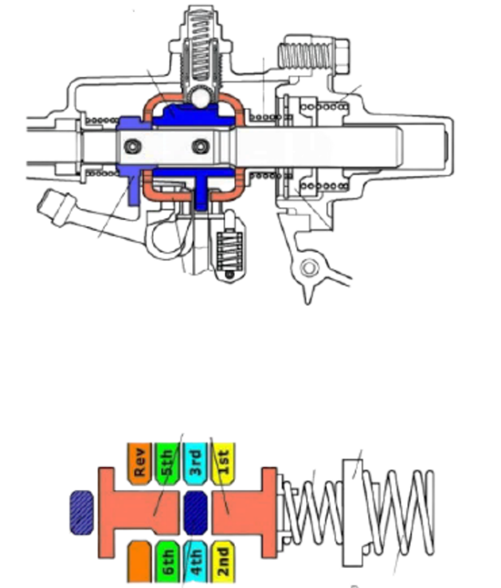
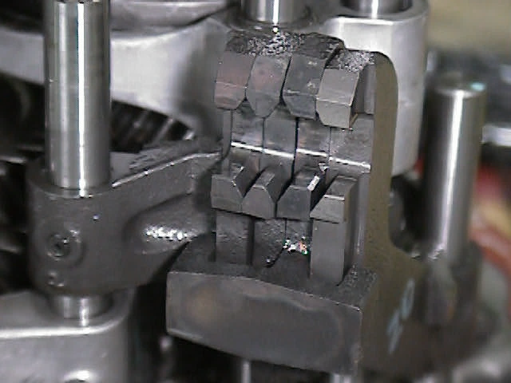
Hình 3.44. Cơ cấu khóa hãm trên các hộp số 2 trục
Cơ cấu này ngăn ngừa khả năng chuyển sang hai số cùng một lúc. Tấm khóa càng chuyển số được chống xoay bởi một bu lông, mà nó cho phép cần chuyển và chọn số trượt theo một hướng đã chọn nhưng không theo hướng chuyển số.
c. Cơ cấu bảo hiểm gài số lùi
Trong hộp số cơ cấu an toàn số lùi dùng để giúp cho người lái không gài nhầm số lùi với các số tiến nhằm đảm bảo an toàn trong chuyển động.
Cơ cấu an toàn số lùi có thể là loại tấm chắn hoặc loại chốt –lò xo. Loại tấm chắn có một tấm chắn đặt tại rãnh của trục trượt gài số lùi, khi gài số lùi người lái phải bóp lẫy điều khiển trên cần số để nâng tấm chắn lên thì mới đưa đuôi cần số vào cửa gài số lùi, khi gài số lùi người lái phải tác dụng một lực lớn hơn khi gài các số tiến để khắc phục sức căng lò xo.
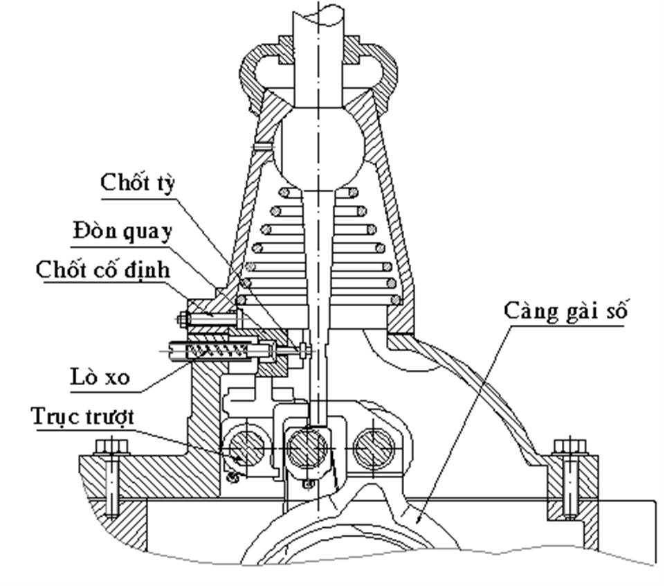
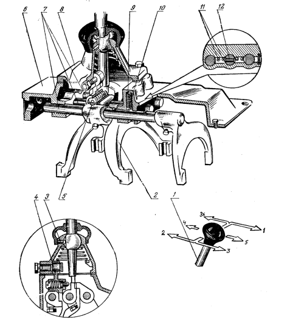
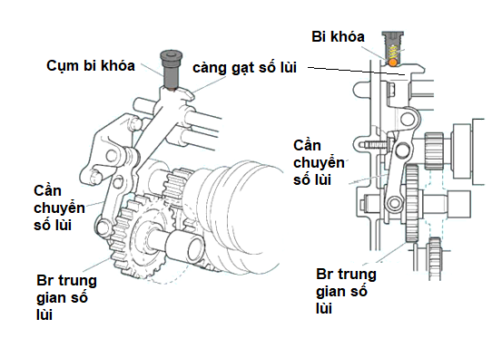
Hình 3.45. Cơ cấu báo hiệu số lùi trên xe Zil 130-131
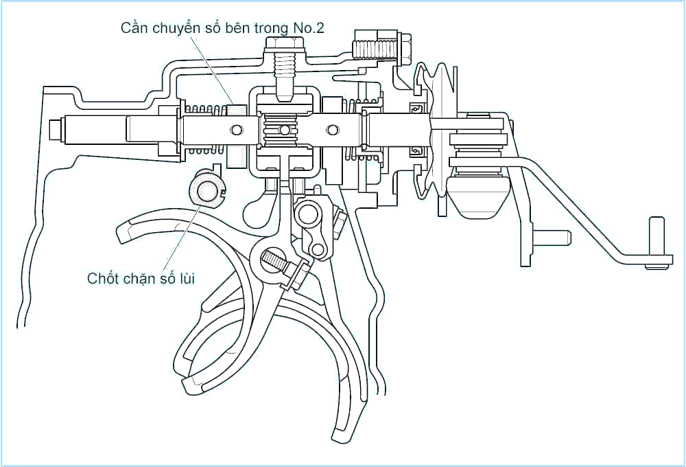
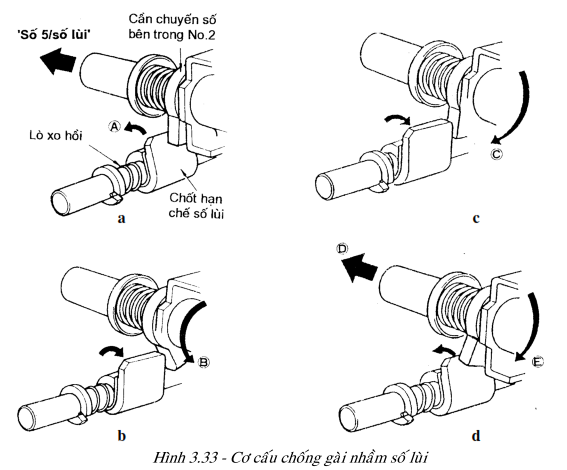
Hình 3.46. Cơ cấu ngăn ngừa về số lùi từ số 5 trên kiểu hộp số 2 trục
Khi hộp số đã được chuyển sang số 5, cần chuyển số bên trong quay theo chiều mũi tên B trên Hình 3.46, nhả chốt hạn chế số lùi ra. Kết quả là, chốt hạn chế. số lùi được trở về vị trí ban đầu nhờ lò xo hồi.
Sau khi cần chuyển số trở về vị trí trung gian giữa số 3 và số 4 và tiếp theo chuyển sang vị trí chọn số 5/ số lùi (mũi tên D),cần chuyển số bên trong và chốt hạn chế số lùi sẽ có hình dạng đưa ra dưới đây.
Nếu cố chuyển cần sang số trực tiếp từ số 5 sang số lùi (chỉ ra bởi mũi tên C). Cần chuyển số bên trong đập vào chốt hạn chế số lùi, tránh cho hộp số chuyển từ số 5 sang số lùi.
d. Đồng tốc
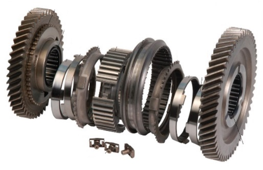
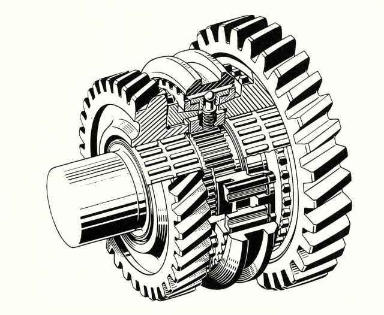
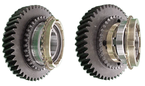
Hình 3.47. Đồng tốc Kia
Bộ đồng tốc trong hộp số được dùng để nhanh chóng làm đồng đều tốc độ giữa bánh răng gài số với trục, và cố định bánh răng gài số với trục khi đã gài số. Đảm bảo việc gài số dễ dàng, êm dịu, không có va đập.
Trong hộp số ô tô hiện nay thường sử dụng các loại đồng tốc quán tính chốt dọc trục và đồng tốc quán tính con chạy.
Đồng tốc quán tính chốt dọc trục
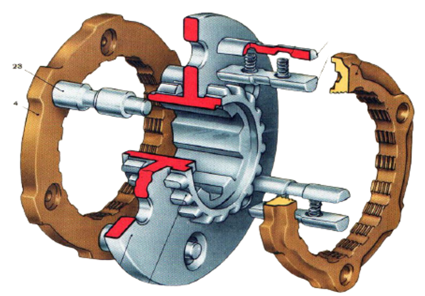
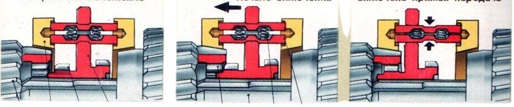
Hình 3.48. Đồng tốc quán tính chốt dọc trục của xe Zil 130 – 131
Ống trượt lắp di trượt trên trục bị động của hộp số bắng then hoa. Hai bên có các vành răng gài số. Trên mặt bích của ống trượt có 6 lỗ để gắn ba chốt cứng và ba chốt mềm xếp xen kẽ nhau. Các lỗ lắp chốt cứng đượcc gia công mặt vát ở hai bên. Các chốt cứng ở phần giữa được gia công mặt vát tạo thành mặt hãm, các chốt mềm được làm thành hai nữa, ở giữa có các lò xo.
Hai vành đồng ma sát được gắn chặt với hai đầu chốt cứng và chốt mềm, bề mặt làm việc của các vành đồng dạng hình côn, trên đó có các vòng ren và rãnh để cắt màng dầu và cặn bẩn.
Khi gài số, người lái gạt cần số để ống trượt dịch chuyển về phía bánh răng gài số, qua các chốt mềm làm vành đồng ma sát dịch chuyển cùng với ống trượt. Tới khi mặt côn của vành đồng được tỳ sát vào mặt côn của bánh răng gài số, tại bề mặt ma sát xuất hiện mô men ma sát làm cho vành đồng ma sát quay tốc độ góc bánh răng gài số.
Trong giai đoạn bánh răng gài số và trục chưa đồng đều tốc độ: Vì vành đồng ma sát quay cùng tốc độ với bánh răng gài số, nên vành đồng bị xoay đi một góc tương đối so với ống trượt làm cho mặt vát trên các chốt cứng tỳ sát vào mặt vát của lỗ trên mặt bích ống trượt.
Khi bánh răng gài số và trục đã đồng đều tốc độ: Tại bề mặt tiếp xúc giữa bánh răng gài số và vành đồng ma sát không còn tồn tại mô men ma sát. Lúc này người lái chỉ cần khắc phục được sức căng của lo xo ở chốt mềm, đẩy ống trượt tiếp tục dịch chuyển. Vành răng của ống trượt ăn khớp với vành răng phụ của bánh răng gài số, bánh răng được cố định với trục và quá trình gài số được thực hiện.
Đồng tốc quán tính chốt hướng kính
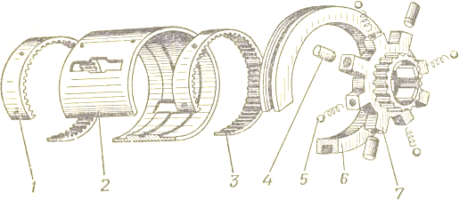
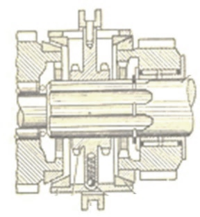
Hình 3.49. Cơ cấu đồng tốc chốt quán tính hướng kính - Ural 375D
Ống trượt (3) được lắp di trượt trên trục bị động bằng then hoa, hai bên có các vành răng để gài số. Theo chu vi có 8 vấu hướng kính trong đó có 4 vấu dài và 4 vấu ngắn xen kẽ nhau. Bốn vấu dài là các chốt cứng (2) có tiết diện hình chữ nhật được gia công mặt vát ở các góc, 4 vấu ngắn là các chốt mềm (5) gồm lò xo và cốc lò xo đặt trong các lỗ khoan trên các vấu. Thân của bộ đồng tốc (7) dạng hình trụ, ở hai đầu được tán chặc hai vành đồng ma sát, trên trân có 4 rãnh dài ở giữa mỗi rãnh được gia công mặt vát để tạo thành mặt hãm, mặt trụ phía trong thân có rãnh lõm đựoc tiếp xúc với cóc lò xo của chốt mềm. Trên các vành đồng ma sát có các bề mặt ma sát hình côn trên đó có các vòng ren và rãnh để cắt màng dầu và gạt cặn bẩn. Vòng ngoài (6) được gắn chặt với các chốt cứng, trên đó có rãnh vòng để lắp với càng gài số.
Đồng tốc quán tính chốt con chạy.
Bộ đồng tốc quán tính chốt con chạy có 2 kiểu thiết kế: loại 1 mặt côn ma sát với đồng tốc mặt trong hoặc mặt ngoài; Loại 2 hoặc 3 mặt côn ma sát.
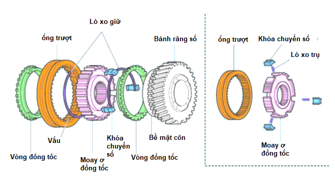
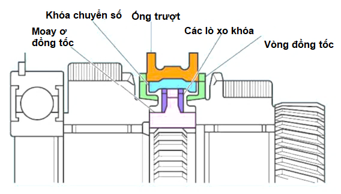
Hình 3.50. Loại 1 mặt côn ma sát
Bộ đồng tốc (Hình 3.50) bao gồm ống trượt gài số, thân đồng tốc (moay ơ đồng tốc), 3 chốt ép (con chạy), 2 lò xo vòng, vòng đồng tốc và bánh răng gài số.
Ống trượt gài số: Ống này có vấu khớp ở mặt trong ăn khớp với đường rãnh ở mặt ngoài thân đồng tốc. Ba chốt ép (con chạy) được dẫn hướng bởi thân đồng tốc và ép vào vấu khớp của ống trượt gài số nhờ 2 lò xo vòng. Nhờ vậy, ống trượt gài số được giữ ở vị trí trung tâm trên thân đồng tốc.
Thân đồng tốc (Moay ơ đồng tốc): Ăn khớp then hoa với trục của bánh răng gài số, ngoài có răng ăn khớp với răng của ống trượt gài số.
Vòng đồng tốc (vành đồng ma sát): có mặt côn ma sát bên trong và răng khóa bên ngoài. Ba rãnh cắt trên vòng đồng tốc giữ nó không bị xoay với các chốt ép.
Bánh răng gài số: Có bề mặt ma sát hình côn nằm ở phía ngoài hướng về vòng đồng tốc; phía sau là các răng gài số.
Nguyên lý làm việc:
*Vị trí trung gian:
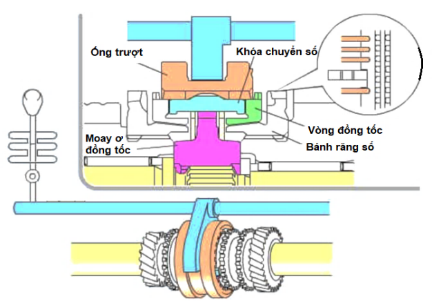
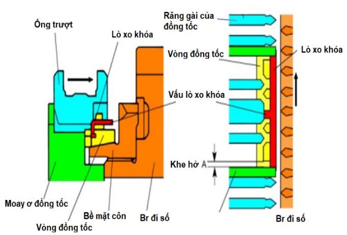
Hình 3.51. Ở vị trí số trung gian
Mỗi bánh răng số được ăn khớp tương ứng với bánh răng bị động và quay tự quanh trục. Moay-ơ ly hợp lắp với vành trượt bởi các then hoa và lắp vào trục. Vành đồng tốc quay tự do trong chế độ này.
*Giai đoạn thứ nhất của cần chuyển số bắt đầu(bắt đầu sự đồng tốc)
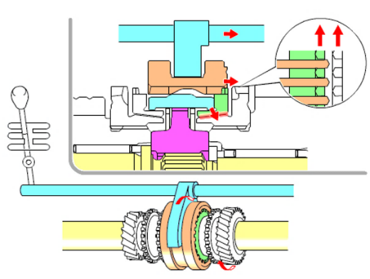
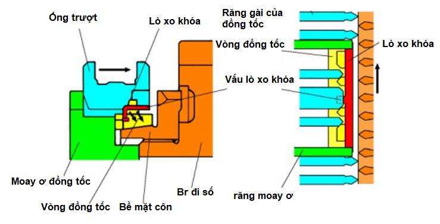
Hình 3.52. Giữa quá trình đồng tốc
Khi di chuyển cần gạt số, càng gạt, mà ăn khớp với rãnh trên ống trượt, ấn ống trượt theo hướng được chỉ ra bởi mũi tên.
Vì vành trượt và khóa đồng tốc được ăn khớp qua vấu ở giữa của khóa, nên sự chuyển động của ống trượt được truyền tới khóa đồng tốc, ấn vành đồng tốc ép vào phần côn của bánh răng để bắt đầu đồng tốc.
Do sự khác nhau về tốc độ giữa ống trượt và bánh răng và do ma sát giữa vành đồng tốc và phần côn của bánh răng, vành đồng đồng tốc chuyển động theo chiều quay của bánh răng. Độ dịch chuyển này bằng với sự chênh lệch về độ rộng khe và độ rộng của khóa.
Do vậy, khi nhìn từ trên xuống, các then hoa bên trong ống trượt và vành đồng tốc chưa đúng vị trí ăn khớp với nhau.
*Giai đoạn hai – Cần chuyển số được ấn mạnh hơn (trong quá trình đồng tốc):
Khi cần gạt số di chuyển thêm, lực tác dụng lên ống trượt vượt qua lực của lò xo khóa hãm bộ đồng tốc và ống trượt vượt qua phần vấu của khóa.
Tuy nhiên, các then của ống trượt và của vành đồng tốc chưa được thẳng hàng hoàn toàn, vì vậy lực tác dụng lên ống trượt nhờ càng số ấn vành đồng tốc ép vào phần côn của bánh răng qua vành đồng tốc và ống trượt mạnh hơn. Điều này làm cho tốc độ của bánh răng số trở nên đồng tốc với tốc độ của ống trượt.
Các rãnh hẹp được tạo ra trên tất cả khu vực bên trong vòng đồng tốc tiếp xúc với phần côn của bánh răng. Khi vòng đồng tốc bị ép vào phần côn, các rãnh làm tăng áp suất bề mặt cắt qua màng dầu để tăng ma sát giúp sự đồng tốc tốt hơn.
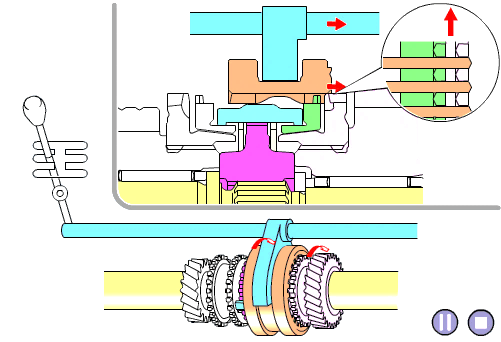
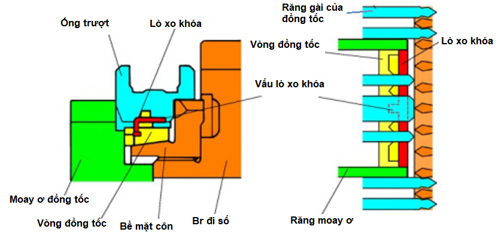
Hình 3.53. Kết thúc quá trình đồng tốc và gài số
Giai đoạn ba – cần số được ấn thêm nữa (hoàn toàn đồng tốc):
Khi tốc độ của ống trượt và bánh răng trở nên bằng nhau, vòng đồng tốc bắt đầu quay tự do theo chiều quay. Kết quả là, then hoa phía trong ống trượt ăn khớp với then hoa trên vành đồng tốc như chỉ ra ở Hình 3.53.
e. Vỏ hộp số
Vỏ hộp số thường được chế tạo bằng gang xám bao gồm: Nắp và thân hộp số lắp ghép với nhau bằng bu lông. Hình dạng, kích thước vỏ hộp số phụ thuộc vào sơ đồ bố trí, kích thước của các trục và các bánh răng. Thân hộp số được dùng để gá lắp các trục qua các ổ lăn., nắp hộp số thường dùng để lắp các trục trượt, cơ cấu định vị, cơ cấu khoá hãm và các lỗ đổ dầu, lỗ thông hơi.